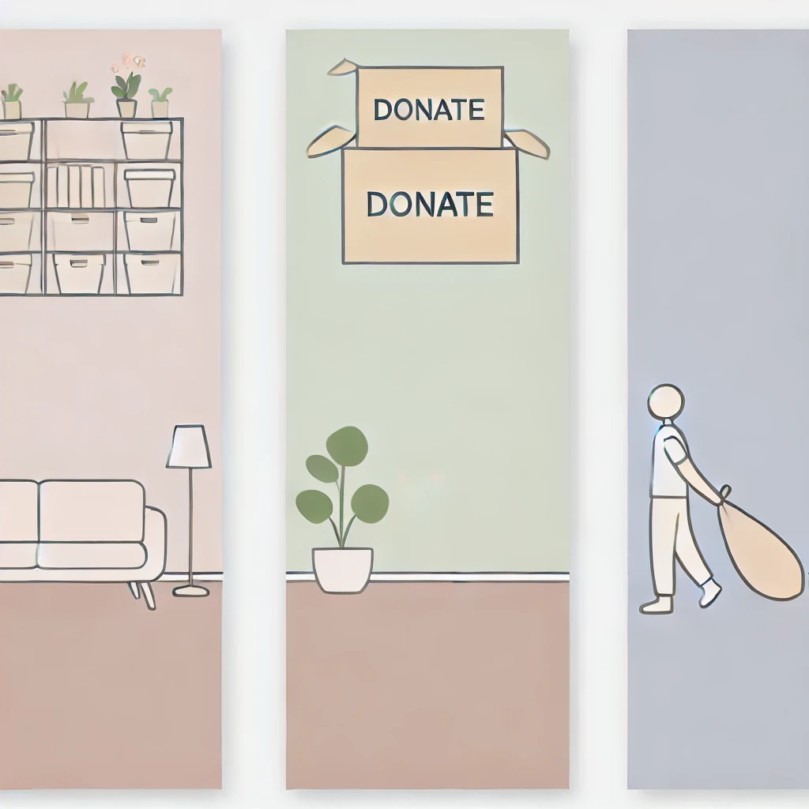
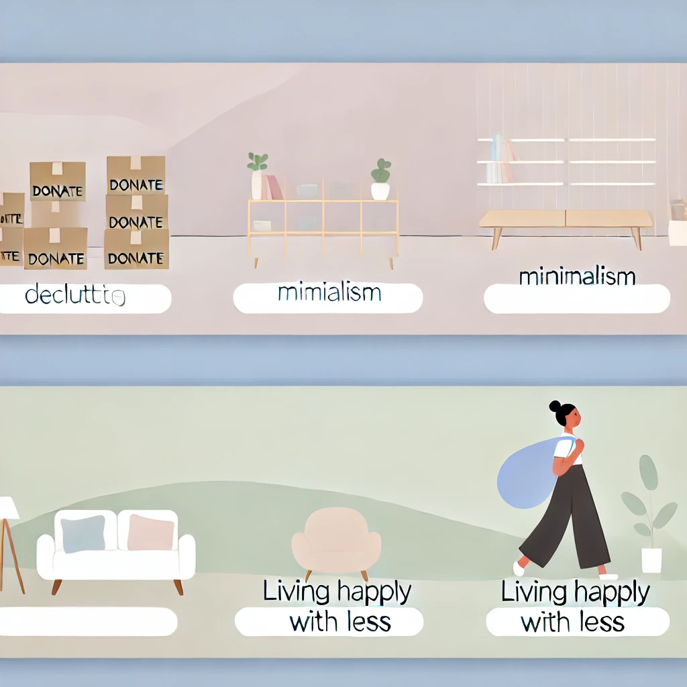

Simplifique sua vidaDicas e inspirações para você viver com mais leveza |
|---|
Como Destralhar seu Espaço em 5 PassosDescubra técnicas simples para organizar sua casa e criar um ambiente mais leve.  Leia Mais → |
Por Que o Minimalismo Está em Alta?Explore como a filosofia minimalista está conquistando o mundo e ajudando pessoas a terem a paz interior. Leia Mais → |
Dicas Para Viver com Menos e Ser Mais FelizAprenda como pequenas mudanças podem transformar seu dia a dia e trazer mais felicidade.  Leia Mais → |